Each skill is a ladder: a fully worked example in the solid-framed box, then four YOUR TURN questions in the dashed box — same skill, new numbers, no help. Work all four before checking the gray check: line; a tracker tick needs all four right first time. A ten-question mixed set follows Ladder 15.
Nothing in this chapter is skipped, and nothing is excluded. CED topics 9.1 to 9.7 carry no exclusion statements at all — unusual, and worth knowing. Where other chapters have material you can safely skim, this one does not. The question this chapter answers. Chapter 12 asked how fast. Chapter 13 asked how far. This chapter asks the one underneath both: why does anything happen at all? Why does ice melt in a warm room and never freeze in one? Why do gases mix and never unmix? The vocabulary warning that will cost you marks if ignored. The CED says “thermodynamically favoured”, not “spontaneous”. Zumdahl says spontaneous. They mean the same thing — \(\Delta G < 0\) — but “spontaneous” misleads, because it sounds like “happens immediately” and a thermodynamically favoured reaction can take geological time (Ladder 11). Use the CED's phrase in answers.Ladder 1 • What entropy actually is
ZUM §17.1Entropy, \(S\), measures how many ways the energy and matter of a system can be arranged. More available arrangements means higher entropy.
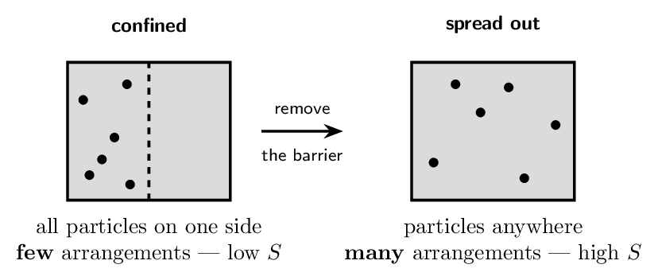
- Define entropy without using the word “disorder”.
the number of ways energy and matter can be arranged
- Two gases in connected flasks mix and never unmix. Explain
using arrangements. far more mixed arrangements exist
- Does anything physically forbid the gas returning to one
side? Explain. no — it is merely overwhelmingly improbable
- Which has higher entropy: 1 mol of \(\ce{Ar}\) in
1 L or in 10 L? Why?
10 L — more positions available
(a) the number of ways energy and matter can be arranged (b) far more mixed arrangements exist (c) no — it is merely overwhelmingly improbable (d) 10 L — more positions available
Ladder 2 • Predicting the sign of \(\Delta S\)
ZUM §17.1You can call the sign of \(\Delta S\) without a single number, and the exam asks you to constantly.
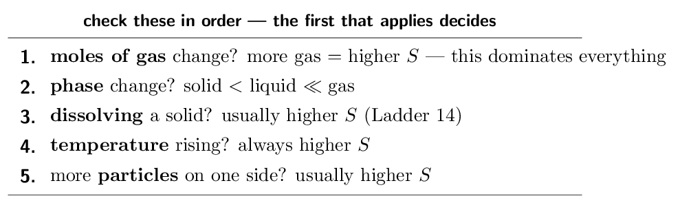
- \(\ce{2SO2(g) + O2(g) -> 2SO3(g)}\) negative — 3 gas mol to 2
- \(\ce{H2O(s) -> H2O(l)}\) positive — solid to liquid
- \(\ce{NH4NO3(s) -> NH4+(aq) + NO3-(aq)}\)
positive — solid to dissolved ions
- \(\ce{N2(g) + 3H2(g) -> 2NH3(g)}\) negative — 4 gas mol to 2
(a) negative — 3 gas mol to 2 (b) positive — solid to liquid (c) positive — solid to dissolved ions (d) negative — 4 gas mol to 2
Ladder 3 • The third law and absolute entropies
ZUM §17.2Entropy has something enthalpy does not: a true zero. That makes \(S\) values absolute, not relative.
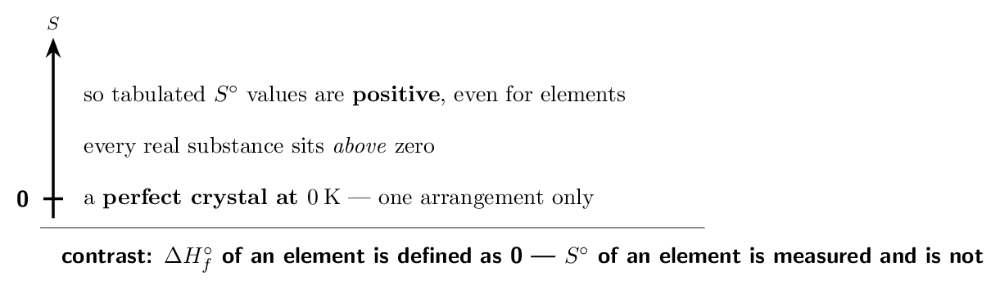
- State the third law of thermodynamics. a perfect crystal at 0 K has \(S = 0\)
- Why is \(S^{\circ}(\ce{O2}) \neq 0\) when
\(\Delta H_{f}^{\circ}(\ce{O2}) = 0\)? \(S\) is absolute; \(\Delta H_{f}\) is a defined reference
- Which is larger, \(S^{\circ}(\ce{H2O(l)})\) or
\(S^{\circ}(\ce{H2O(g)})\)? the gas
- Which is larger, \(S^{\circ}(\ce{CH4})\) or
\(S^{\circ}(\ce{C3H8})\)? Why? \(\ce{C3H8}\) — more atoms, more arrangements
(a) a perfect crystal at 0 K has \(S = 0\) (b) \(S\) is absolute; \(\Delta H_{f}\) is a defined reference (c) the gas (d) \(\ce{C3H8}\) — more atoms, more arrangements
Ladder 4 • Calculating \(\Delta S^{\circ}_{\text{rxn}}\)
ZUM §17.6Same shape as Hess's law from Chapter 6 — products minus reactants, each scaled by its coefficient.
\[ \Delta S^{\circ}_{\text{rxn}} = \sum n\,S^{\circ}(\text{products}) - \sum n\,S^{\circ}(\text{reactants}) \]Negative, as predicted, and large — consistent with destroying three moles of gas.
Two habits. Predict the sign before you compute; it costs five seconds and catches every subtraction reversal. And watch the units: \(S^{\circ}\) is tabulated in J/mol/K while \(\Delta H\) is in kJ/mol. Ladder 7 mixes the two in one equation, and that unit mismatch is the most expensive error in this chapter. Do not set element entropies to zero. \(\ce{H2}\) and \(\ce{O2}\) are elements, but their \(S^{\circ}\) values are 130.7 and 205.1, not 0. Dropping them here would give \(\Delta S^{\circ} = +139.8\,\mathrm{J/K}\) — positive, for a reaction that destroys three moles of gas. The sign check catches it instantly.- Predict the sign of \(\Delta S^{\circ}\) for
\(\ce{N2 + 3H2 -> 2NH3}\). negative
- Compute it.
- Compute \(\Delta S^{\circ}\) for
\(\ce{CaCO3(s) -> CaO(s) + CO2(g)}\).
- Why may you not treat \(S^{\circ}(\ce{N2})\) as zero?
\(S^{\circ}\) is absolute, not a defined reference
(a) negative (b) -198.7 J/K (c) +160.6 J/K (d) \(S^{\circ}\) is absolute, not a defined reference
Ladder 5 • The second law: \(\Delta S_{\text{universe}}\)
ZUM §17.2The actual criterion for a favoured process is not about the system at all.
\[ \Delta S_{\text{univ}} = \Delta S_{\text{sys}} + \Delta S_{\text{surr}} > 0 \quad\text{for a thermodynamically favoured process} \]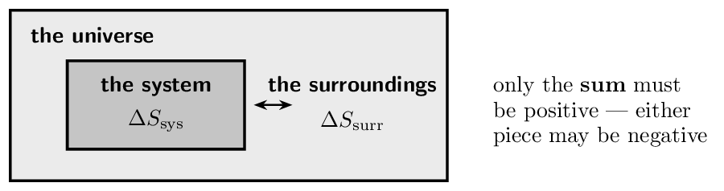
- State the second law in terms of \(\Delta S_{\text{univ}}\).
\(\Delta S_{\text{univ}} > 0\) for a favoured process
- Can a favoured process have \(\Delta S_{\text{sys}} < 0\)?
Explain. yes, if \(\Delta S_{\text{surr}}\) is more positive
- Water freezes at -10 °C. Give the signs of
\(\Delta S_{\text{sys}}\) and \(\Delta S_{\text{surr}}\).
sys negative, surr positive
- What is \(\Delta S_{\text{univ}}\) for a system exactly at
equilibrium? zero
(a) \(\Delta S_{\text{univ}} > 0\) for a favoured process (b) yes, if \(\Delta S_{\text{surr}}\) is more positive (c) sys negative, surr positive (d) zero
Ladder 6 • \(\Delta S_{\text{surr}}\) from \(\Delta H\)
ZUM §17.2The surroundings only ever see the heat the system gives or takes, so their entropy change follows one small equation.
\[ \Delta S_{\text{surr}} = \frac{-\Delta H_{\text{sys}}}{T} \]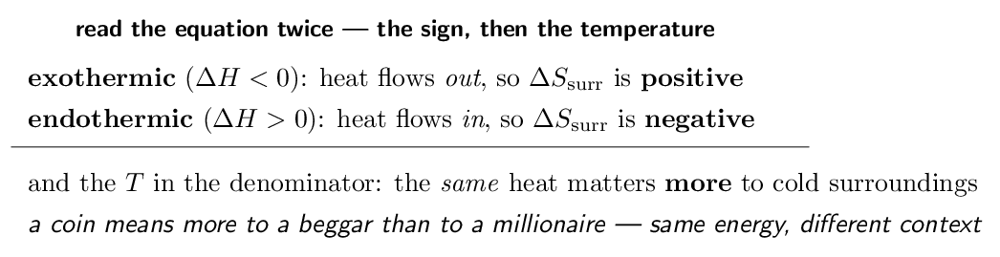
Positive, because an exothermic reaction dumps heat into the surroundings and spreads it there.
Now the same reaction at 700 K: \[ \Delta S_{\text{surr}} = \frac{92200}{700} = +132\,\mathrm{J/mol/K} \] Less than half, from identical heat. That is the whole content of the \(T\) in the denominator: hot surroundings are already full of dispersed energy, so a given quantity of heat adds proportionally fewer new arrangements. And this is why exothermic reactions stop being favoured when heated. \(\Delta S_{\text{sys}}\) does not care much about temperature, but \(\Delta S_{\text{surr}}\) shrinks as \(T\) rises. Eventually it can no longer carry a negative \(\Delta S_{\text{sys}}\), and the reaction reverses — exactly the Haber-process compromise from Chapter 13, Ladder 12, now derived rather than asserted. This equation is also where \(\Delta G\) comes from. Multiply \(\Delta S_{\text{univ}} = \Delta S_{\text{sys}} - \Delta H/T\) through by \(-T\) and you get \(-T\Delta S_{\text{univ}} = \Delta H - T\Delta S\) — the right-hand side is \(\Delta G\). Ladder 7 uses it; it is not a new idea, just a rearrangement.- A reaction has \(\Delta H = -50.0\,\mathrm{kJ/mol}\).
Find \(\Delta S_{\text{surr}}\) at 250 K.
- Same reaction at 500 K.
- Give the sign of \(\Delta S_{\text{surr}}\) for an endothermic
process. negative
- Why does the same released heat produce a larger
\(\Delta S_{\text{surr}}\) at low temperature?
cold surroundings hold less dispersed energy already
(a) +200 J/mol/K (b) +100 J/mol/K (c) negative (d) cold surroundings hold less dispersed energy already
Ladder 7 • Gibbs free energy
ZUM §17.3–17.4 \(\Delta G\) bundles the system and the surroundings into a single number you can compute from system properties alone. \[ \Delta G = \Delta H - T\,\Delta S \]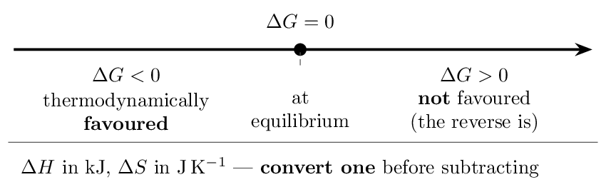
- \(\Delta H = -100.0\,\mathrm{kJ}\), \(\Delta S =
+50.0\,\mathrm{J/K}\), \(T = 298\,\mathrm{K}\). Find
\(\Delta G\).
- \(\Delta H = +40.0\,\mathrm{kJ}\), \(\Delta S =
+100.0\,\mathrm{J/K}\), \(T = 298\,\mathrm{K}\). Find
\(\Delta G\) and say whether it is favoured. +10.2 kJ, not favoured
- What does \(\Delta G = 0\) mean? equilibrium
- Before computing, why must you convert units?
\(\Delta H\) is in kJ, \(\Delta S\) in J
(a) -114.9 kJ (b) +10.2 kJ, not favoured (c) equilibrium (d) \(\Delta H\) is in kJ, \(\Delta S\) in J
Ladder 8 • The four sign combinations
ZUM §17.4Two signs, four cases, and only two of them depend on temperature.
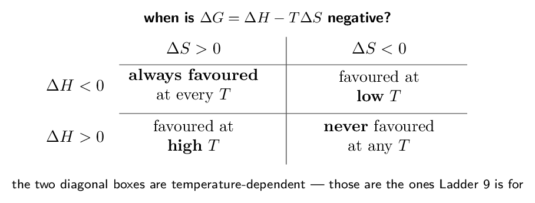
- \(\Delta H < 0\), \(\Delta S > 0\): at what temperatures is it
favoured? all
- \(\Delta H > 0\), \(\Delta S > 0\): at what temperatures?
high \(T\) only
- A reaction is favoured only below 400 K. Give the
signs of \(\Delta H\) and \(\Delta S\). both negative
- Why does raising \(T\) always favour whatever \(\Delta S\) is
arguing for? \(T\) multiplies only the entropy term
(a) all (b) high \(T\) only (c) both negative (d) \(T\) multiplies only the entropy term
Ladder 9 • The crossover temperature
ZUM §17.4For the two temperature-dependent cases, there is one temperature where \(\Delta G\) passes through zero. Set \(\Delta G = 0\) and solve.
\[ 0 = \Delta H - T\Delta S \qquad\Longrightarrow\qquad T = \frac{\Delta H}{\Delta S} \]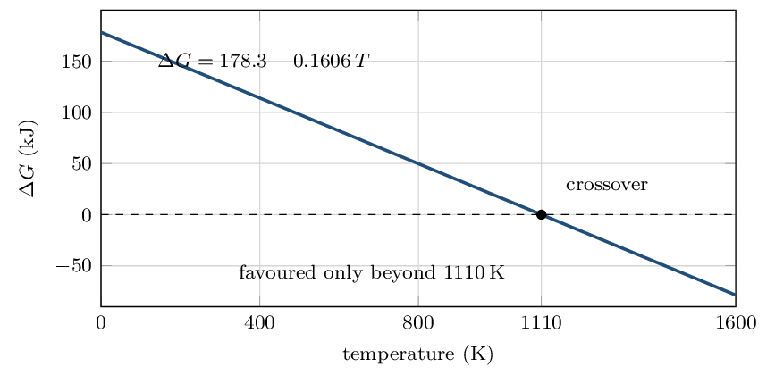
That is about 837 °C.
Check it against reality. Industrial lime kilns run at roughly 900 °C — just above our crossover, as they must be. The calculation predicted a real engineering constraint from two tabulated numbers. Now say which side is which. \(\Delta S\) is positive, so the entropy term grows with \(T\); the reaction is therefore favoured above 1110 K and not below. If \(\Delta S\) had been negative, the inequality would flip and the reaction would be favoured below the crossover. Two cautions. First, \(T = \Delta H / \Delta S\) only makes sense when \(\Delta H\) and \(\Delta S\) have the same sign — otherwise there is no crossover, because the reaction is favoured either always or never (Ladder 8), and the formula returns a meaningless negative temperature. Second, the answer is in kelvin, always; convert to celsius only if the question asks. And a caveat worth stating on an FRQ: this assumes \(\Delta H^{\circ}\) and \(\Delta S^{\circ}\) are temperature-independent. They are not exactly, but over ordinary ranges the approximation is good, and it is what the exam expects.- \(\Delta H = +30.0\,\mathrm{kJ}\), \(\Delta S =
+100.0\,\mathrm{J/K}\). Find the crossover
temperature.
- Is that reaction favoured above or below it? Why?
above — \(\Delta S\) is positive
- \(\Delta H = -40.0\,\mathrm{kJ}\), \(\Delta S =
-80.0\,\mathrm{J/K}\). Find the crossover and say
which side is favoured. 500 K, favoured below
- Why does \(T = \Delta H/\Delta S\) give nothing useful when the
two signs differ? there is no crossover; it is favoured always or never
(a) 300 K (b) above — \(\Delta S\) is positive (c) 500 K, favoured below (d) there is no crossover; it is favoured always or never
Ladder 10 • \(\Delta G^{\circ}\) from formation values
ZUM §17.4A second route to \(\Delta G^{\circ}\), identical in shape to Hess's law and to Ladder 4.
\[ \Delta G^{\circ}_{\text{rxn}} = \sum n\,\Delta G_{f}^{\circ}(\text{products}) - \sum n\,\Delta G_{f}^{\circ}(\text{reactants}) \]Negative, so iron smelting in a blast furnace is thermodynamically favoured — as several thousand years of ironworking suggest.
Elements are zero here. \(\Delta G_{f}^{\circ}(\ce{Fe}) = 0\) because iron in its standard state is the reference — exactly like \(\Delta H_{f}^{\circ}\) in Chapter 6. This is the opposite of Ladder 4's rule for \(S^{\circ}\), and keeping the two straight is what this ladder tests.- Find \(\Delta G^{\circ}\) for \(\ce{N2(g) + 3H2(g) -> 2NH3(g)}\).
- Find \(\Delta G^{\circ}\) for \(\ce{N2(g) + O2(g) -> 2NO(g)}\).
- Which of the two is thermodynamically favoured at
298 K? the first
- Why is \(\Delta G_{f}^{\circ}\) of an element zero when
\(S^{\circ}\) of an element is not? \(\Delta G_{f}\) is a defined reference; \(S\) is absolute
(a) -32.8 kJ (b) +173.2 kJ (c) the first (d) \(\Delta G_{f}\) is a defined reference; \(S\) is absolute
Ladder 11 • Thermodynamic versus kinetic control
ZUM §17.7 \(\Delta G\) says whether a reaction can go. It says nothing at all about whether it will in your lifetime.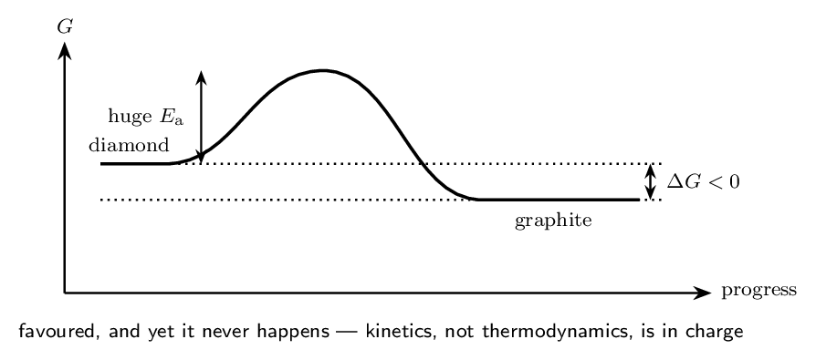
- A reaction has \(\Delta G^{\circ} = -200\,\mathrm{kJ}\) but
no observable change occurs. Explain. large \(E_{\mathrm{a}}\) — kinetic control
- Does a catalyst change \(\Delta G^{\circ}\)? Explain.
no — it changes only the rate
- What does “metastable” mean? favoured but trapped behind a barrier
- Which quantity would you change to make the reaction in (a)
actually proceed? \(E_{\mathrm{a}}\), via a catalyst or heat
(a) large \(E_{\mathrm{a}}\) — kinetic control (b) no — it changes only the rate (c) favoured but trapped behind a barrier (d) \(E_{\mathrm{a}}\), via a catalyst or heat
Ladder 12 • \(\Delta G^{\circ}\) and \(K\)
ZUM §17.9Chapter 13's equilibrium constant and this chapter's free energy are the same information in two currencies.
\[ \Delta G^{\circ} = -RT \ln K \qquad R = 8.314\;\mathrm{J\,mol^{-1}\,K^{-1}} \]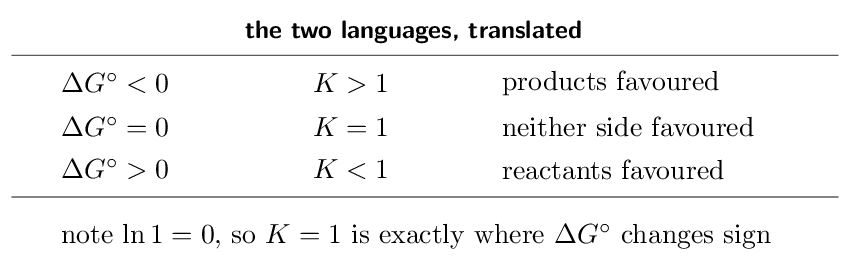
Large \(K\), negative \(\Delta G^{\circ}\) — the two statements agree, as they must.
(b) A reaction has \(\Delta G^{\circ} = +20.0\,\mathrm{kJ}\) at 298 K. Find \(K\).Rearrange: \[ \ln K = \frac{-\Delta G^{\circ}}{RT} = \frac{-20000}{(8.314)(298)} = \frac{-20000}{2478} = -8.07 \] \[ K = e^{-8.07} = \mathbf{3.1e-4} \]
Positive \(\Delta G^{\circ}\), \(K\) well below 1 — reactants favoured, consistent again.
The sign check that catches everything. Before computing, decide which side of 1 the answer should fall on. Negative \(\Delta G^{\circ}\) gives \(K > 1\); positive gives \(K < 1\). A \(K\) of 3.1e-4 for a positive \(\Delta G^{\circ}\) passes; a \(K\) of 3200 would not, and would mean a dropped minus sign. Units, again. \(R\) is in joules, so \(\Delta G^{\circ}\) must be in joules too. Feeding kilojoules into this equation is the same mistake as Ladder 7's, in a new place. Why the relationship exists at all. \(\Delta G^{\circ}\) is the free-energy difference between pure reactants and pure products, and \(K\) measures where the mixture settles between them. They are two descriptions of one thing — which is why Chapter 13, Ladder 5's “\(K \gg 1\) means products favoured” and this chapter's “\(\Delta G^{\circ} < 0\) means favoured” were always the same sentence.- \(K = 1.0\). Find \(\Delta G^{\circ}\).
- \(\Delta G^{\circ} = -10.0\,\mathrm{kJ}\). Is \(K\) greater or
less than 1? greater than 1
- \(K = 1.0e-3\). Find \(\Delta G^{\circ}\).
- A student computes \(K = 500\) from \(\Delta G^{\circ} =
+15\,\mathrm{kJ}\). What went wrong?
sign error — positive \(\Delta G^{\circ}\) needs \(K < 1\)
(a) 0 (b) greater than 1 (c) +17.1 kJ (d) sign error — positive \(\Delta G^{\circ}\) needs \(K < 1\)
Ladder 13 • \(\Delta G\) versus \(\Delta G^{\circ}\)
ZUM §17.9The degree symbol matters. \(\Delta G^{\circ}\) describes standard conditions; \(\Delta G\) describes the mixture you actually have.
\[ \Delta G = \Delta G^{\circ} + RT \ln Q \]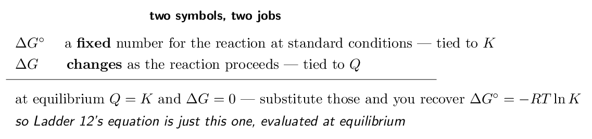
- State the difference between \(\Delta G\) and
\(\Delta G^{\circ}\). standard conditions vs the actual mixture
- What is \(\Delta G\) at equilibrium? zero
- A reaction has \(\Delta G^{\circ} > 0\) and starts with pure
reactants. Does any product form? Explain.
yes — at \(Q = 0\), \(\Delta G\) is negative
- If \(Q > K\), what is the sign of \(\Delta G\), and which way does
the reaction run? positive; it runs in reverse
(a) standard conditions vs the actual mixture (b) zero (c) yes — at \(Q = 0\), \(\Delta G\) is negative (d) positive; it runs in reverse
Ladder 14 • Free energy of dissolution
ZUM §17.5Chapter 11's question — why does anything dissolve? — finally gets its quantitative answer.
Negative, so yes — and note how it is negative. The enthalpy term is unfavourable; the entropy term carries the whole reaction.
This is the answer Chapter 11 owed you. Ladder 5 there showed that dissolving \(\ce{NaCl}\) is slightly endothermic — the beaker cools — and asked why it happens anyway. The answer is that ions going from a rigid lattice to freely moving hydrated particles is a large entropy increase, and \(T\Delta S\) beats a small positive \(\Delta H\). The three-step cycle, now in free-energy terms. Breaking the lattice and opening the solvent both cost enthalpy; solvation returns it. Whatever small residue is left over, the entropy term usually overwhelms — which is why most salts dissolve at all. When it fails. For a salt with a large lattice energy and a strongly positive \(\Delta H_{\text{soln}}\), the entropy term cannot cover it and \(\Delta G > 0\) — the salt is insoluble. That is Chapter 16's \(K_{sp} \ll 1\), and via \(\Delta G^{\circ} = -RT\ln K\) it is literally the same statement: a positive \(\Delta G^{\circ}\) for dissolution is a small \(K_{sp}\). And the temperature prediction. Since \(\Delta S\) is usually positive for dissolving, \(T\Delta S\) grows with heat, so most solids become more soluble when warmed — Chapter 10, Ladder 9's solubility curves, predicted rather than tabulated.- A salt dissolves with \(\Delta H = +25.0\,\mathrm{kJ/mol}\)
and \(\Delta S = +100.0\,\mathrm{J/mol/K}\). Find
\(\Delta G\) at 298 K.
- Is it favoured? What is driving it? yes — entropy
- Why is \(\Delta S\) almost always positive for dissolving a
solid? lattice to free hydrated ions
- A salt has \(\Delta G^{\circ} > 0\) for dissolution. What does
that say about \(K_{sp}\)? \(K_{sp} < 1\) — sparingly soluble
(a) -4.8 kJ/mol (b) yes — entropy (c) lattice to free hydrated ions (d) \(K_{sp} < 1\) — sparingly soluble
Ladder 15 • Coupled reactions
ZUM §17.10An unfavourable reaction can be driven by attaching it to a favourable one — provided they share a common species.
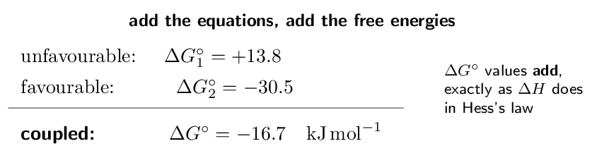
Negative, so the coupled reaction is favoured, and this is the first step of glycolysis — happening in your cells right now.
No law was broken. The uphill reaction did not become favourable; it was paid for by a larger downhill one. The combined process still has \(\Delta G < 0\), so the second law is satisfied. Coupling is bookkeeping, not magic. The two requirements. The reactions must share a common species — here \(\ce{P_i}\), which cancels when you add them — and the favourable \(\Delta G^{\circ}\) must be larger in magnitude than the unfavourable one. The industrial version appeared in Ladder 10: iron oxide reduction on its own is hugely unfavourable (\(\Delta G^{\circ} = +742\,\mathrm{kJ}\)), but coupled to carbon monoxide oxidation it comes out at -29.4 kJ. A blast furnace is a coupled reaction the size of a building.- Reaction A has \(\Delta G^{\circ} = +25\,\mathrm{kJ}\) and
reaction B has \(-40\,\mathrm{kJ}\). Find \(\Delta G^{\circ}\)
for the coupled process.
- Is the coupled process favoured? yes
- What two conditions must hold for coupling to work?
a shared species, and the favourable \(\Delta G\) must be larger
- Does coupling violate the second law? Explain.
no — the total \(\Delta G\) is still negative
(a) -15 kJ (b) yes (c) a shared species, and the favourable \(\Delta G\) must be larger (d) no — the total \(\Delta G\) is still negative
Mixed set • ten questions, no labels
Every question so far arrived with its ladder attached. These ten do not — and in this chapter the first decision is usually which equation: \(\Delta H - T\Delta S\), formation values, \(-RT\ln K\), or \(\Delta G^{\circ} + RT\ln Q\).
- Give the sign of \(\Delta S\) for
\(\ce{2H2O2(l) -> 2H2O(l) + O2(g)}\). positive
- \(\Delta H = -80.0\,\mathrm{kJ}\), \(\Delta S =
-200.0\,\mathrm{J/K}\). Find \(\Delta G\) at
298 K.
- For that reaction, find the crossover temperature and say
which side is favoured. 400 K, favoured below
- \(K = 2.0e-5\) at 298 K
(\(RT = 2478\,\mathrm{J/mol}\)). Find \(\Delta G^{\circ}\).
- A reaction has \(\Delta G^{\circ} = -150\,\mathrm{kJ}\) yet
nothing observable happens. Explain. kinetic control
(a) positive (b) -20.4 kJ (c) 400 K, favoured below (d) +26.8 kJ (e) kinetic control
- Using \(S^{\circ}\) (J/mol/K):
\(\ce{N2O4(g)}\) \(= 304.3\), \(\ce{NO2(g)}\) \(= 240.1\), find
\(\Delta S^{\circ}\) for \(\ce{N2O4(g) -> 2NO2(g)}\).
- A reaction has \(\Delta H > 0\) and \(\Delta S < 0\). At what
temperatures is it favoured? never
- Reaction A (\(\Delta G^{\circ} = +18\,\mathrm{kJ}\)) is
coupled to B (\(-45\,\mathrm{kJ}\)). Find the coupled
\(\Delta G^{\circ}\).
- \(\Delta G^{\circ} = 0\) for a reaction. What is \(K\)?
\(K = 1\)
- A salt dissolves endothermically yet the process is favoured.
Which term is responsible, and why? \(T\Delta S\) — lattice to free ions
(a) +175.9 J/K (b) never (c) -27 kJ (d) \(K = 1\) (e) \(T\Delta S\) — lattice to free ions
Mastery tracker
Tick a row only if all four YOUR TURN questions were right on the first attempt. Every row is assessed — CED topics 9.1 to 9.7 carry no exclusion statements at all, so nothing here is optional.
| First try? | Skill | Ladder | If not, re-read… |
|---|---|---|---|
| \(\square\) | what entropy is | 1 | arrangements, not mess |
| \(\square\) | predicting the sign of \(\Delta S\) | 2 | count gas moles first |
| \(\square\) | the third law, absolute \(S\) | 3 | elements are not zero |
| \(\square\) | calculating \(\Delta S^{\circ}\) | 4 | predict the sign first |
| \(\square\) | the second law | 5 | only the sum must rise |
| \(\square\) | \(\Delta S_{\text{surr}}\) from \(\Delta H\) | 6 | \(-\Delta H/T\) |
| \(\square\) | Gibbs free energy | 7 | convert kJ and J |
| \(\square\) | the four sign cases | 8 | \(T\) scales entropy only |
| \(\square\) | the crossover temperature | 9 | \(T = \Delta H/\Delta S\) |
| \(\square\) | \(\Delta G^{\circ}\) from formation | 10 | elements ARE zero here |
| \(\square\) | thermodynamic vs kinetic | 11 | extent is not speed |
| \(\square\) | \(\Delta G^{\circ}\) and \(K\) | 12 | \(-RT\ln K\), joules |
| \(\square\) | \(\Delta G\) versus \(\Delta G^{\circ}\) | 13 | \(Q\) versus \(K\) |
| \(\square\) | free energy of dissolution | 14 | entropy usually wins |
| \(\square\) | coupled reactions | 15 | the values add |
| \(\square\) | mixed set (8 of 10) | — | whichever it exposed |
15/15 and the mixed set: you have Unit 9's thermodynamics half, and Chapter 18 will lean on Ladders 12 and 13 constantly — cell potential is free energy wearing different units.
11–14: check where the misses fall. Ladders 1–6 are conceptual and repair by re-reading. Ladders 7–10 are the calculation core, and the overwhelming majority of errors there are the kJ/J unit mismatch rather than any misunderstanding. If that is your pattern, the fix is mechanical: write the units next to every number before substituting.
10 or fewer: the likeliest single cause is treating \(\Delta G\) as a statement about speed. Re-read Ladders 7 and 11 together, then Ladder 12 — “favoured” means the equilibrium lies toward products, and nothing more. Everything else in this chapter is arithmetic on top of that one distinction.
One thing to carry into Chapter 18. \(\Delta G^{\circ} = -nFE^{\circ}\) is coming, and it is Ladder 12 with a different constant. If \(\Delta G^{\circ} = -RT\ln K\) is solid, electrochemistry's thermodynamics is already half learned.